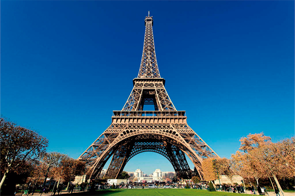
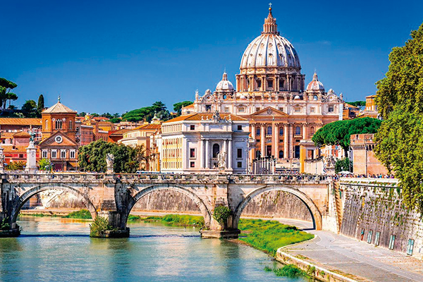
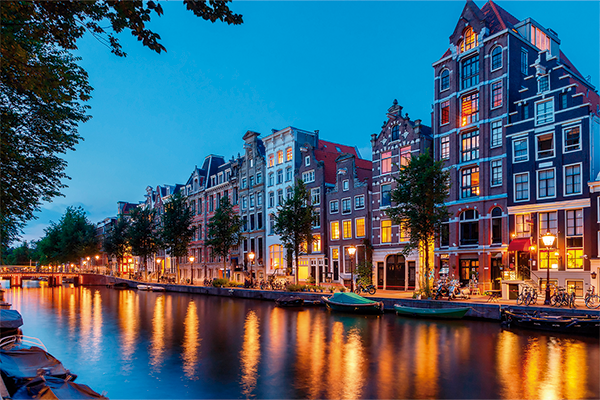
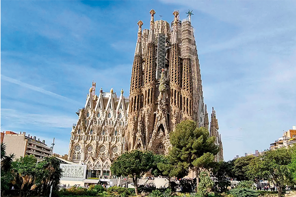
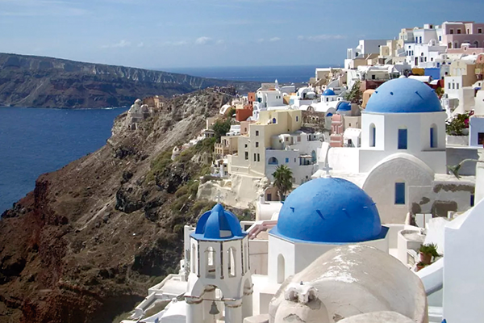
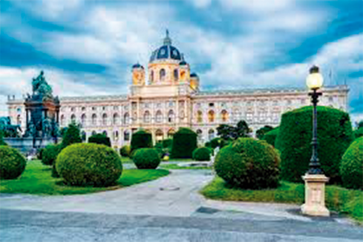
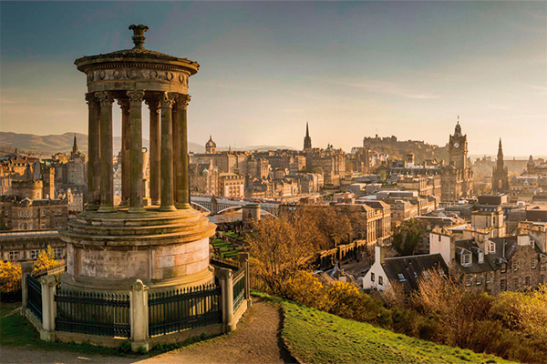

Paris, França

- Atrações: Torre Eiffel, Museu do Louvre, Catedral de Notre-Dame, Arco do Triunfo
- Destaque: Passeios românticos ao longo do Sena e a vista noturna da Torre Eiffel
Roma, Itália

- Atrações: Coliseu, Vaticano (Basílica de São Pedro), Fontana di Trevi, Fórum Romano
- Destaque: A sensação de caminhar pelas ruas históricas da Cidade Eterna
Londres, Reino Unido

- Atrações: Big Ben, Palácio de Buckingham, Museu Britânico, London Eye
- Destaque: O contraste entre o moderno e o antigo, com parques e mercados
Amsterdã, Países Baixos

- Atrações: Museu Van Gogh, Casa de Anne Frank, Passeios de barco pelos canais
- Destaque: Os tranquilos canais e campos de tulipas na primavera
Barcelona, Espanha

- Atrações: Sagrada Família, Parque Güell, Las Ramblas, Bairro Gótico
- Destaque: O estilo único de Antoni Gaudí e as praias mediterrâneas
Santorini, Grécia

- Atrações: Pôr do sol em Oia, Praia Vermelha, sítio arqueológico de Akrotiri
- Destaque: As deslumbrantes paisagens e vilas tradicionais
Viena, Áustria

- Atrações: Palácio de Schönbrunn, Ópera Estatal de Viena, Museu de História da Arte
- Destaque: Concertos de música clássica e palácios suntuosos
Edimburgo, Escócia

- Atrações: Castelo de Edimburgo, Royal Mile, Holyrood Palace
- Destaque: O festival de arte e as paisagens das Terras Altas